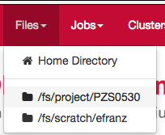

Dashboard¶
Announcements¶
Attention
TODO
Add shortcuts to Files menu¶
The Files menu by default has a single link to open the Files app in the user’s Home Directory. More links can be added to this menu, for Scratch space and Project space directories.
Adding more links currently requires adding a custom initializer to the
Dashboard app. Ruby code is placed in the initializer to add one or more Ruby
Pathname objects to the OodFilesApp.candidate_favorite_paths array, a
global attribute that is used in the Dashboard app.
Start by creating the file
/etc/ood/config/apps/dashboard/initializers/ood.rb as such:
# /etc/ood/config/apps/dashboard/initializers/ood.rb
OodFilesApp.candidate_favorite_paths.tap do |paths|
# add project space directories
projects = User.new.groups.map(&:name).grep(/^P./)
paths.concat projects.map { |p| Pathname.new("/fs/project/#{p}") }
# add scratch space directories
paths << Pathname.new("/fs/scratch/#{User.new.name}")
paths.concat projects.map { |p| Pathname.new("/fs/scratch/#{p}") }
end
- The variable
pathsis an array ofPathnameobjects that define a list of what will appear in the Dashboard menu for Files - At OSC, the pattern for project paths follows
/fs/project/project_name. So above we:- get an array of all user’s groups by name
- filter that array for groups that start with
P(i.e.,PZS0002,PAW0003, …) - using
mapwe turn this array into an array ofPathnameobjects to all the possible project directories the user could have. - extend the paths array with this list of paths
- For possible scratch space directories, we look for either
/fs/scratch/project_nameor/fs/scratch/user_name
On each request, the Dashboard will check for the existence of the directories
in OodFilesApp.candidate_favorite_paths array and whichever directories
exist and the user has access to will appear as links in the Files menu under
the Home Directory link.

Fig. 1 Shortcuts to scratch and project space directories in Files menu in OSC OnDemand.
- You must restart the Dashboard app to see a configuration change take effect. This can be forced from the Dashboard itself by selecting Help → Restart Web Server from the top right menu.
If you access the Dashboard, and it crashes, then you may have made a mistake
in ood.rb file, whose code is run during the initialization of the Rails
app.